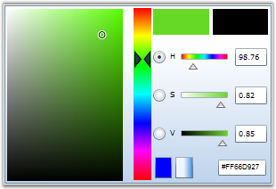
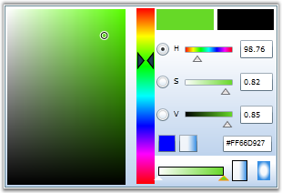
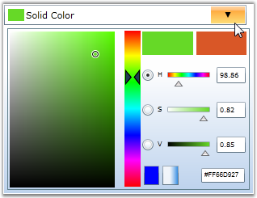
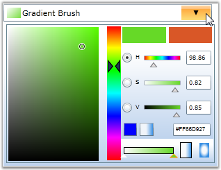
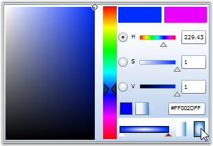
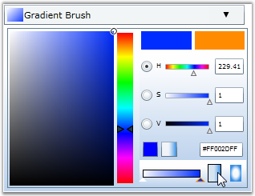
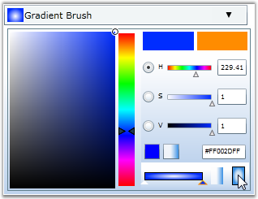

BrushSelector and BrushEdit controls can return two types of brush modes:
· Solid Color Brush
· Gradient Brush
 Note: The BrushMode property is used to switch
between these modes.
Note: The BrushMode property is used to switch
between these modes.
14. A. Setting the Brush Mode for BrushEdit Control
1. Setting Brush Mode to Solid
The following code example illustrates how to set the Brush mode of the BrushEdit control to "Solid".
|
[XAML]
<!-- Adding BrushEdit --> <syncfusion:BrushEdit Margin="20" BrushMode="Solid" Name="brushedit"/> |
|
[C#]
// Creating an instance of the BrushEdit control. BrushEdit brushedit = new BrushEdit();
// Setting brush mode as Solid. brushedit.BrushMode = BrushModes.Solid; |

Figure 356: BrushEdit with Brush Mode set to Solid
The Brush mode of the BrushEdit control to is set to Solid.
2. Setting Brush Mode to Gradient
The following code example illustrates how to set the Brush mode of the BrushEdit control to Gradient.
|
[XAML]
<!-- Adding BrushEdit --> <syncfusion:BrushEdit Margin="20" BrushMode="Gradient" Name="brushedit"/> |
|
[C#]
// Creating an instance of the BrushEdit control. BrushEdit brushedit = new BrushEdit();
// Setting brush mode as Gradient. brushedit.BrushMode = BrushModes.Gradient; |

Figure 357: BrushEdit with Brush Mode set to Gradient
The Brush mode of the BrushEdit control to is set to Gradient.
15. B. Setting the Brush Mode for BrushSelector Control
1. Setting Brush Mode to Solid
The following code example illustrates how to set the Brush Mode of the BrushSelector control to "Solid".
|
[XAML]
<!-- Adding BrushEdit --> <syncfusion:BrushSelector Margin="20" BrushMode="Solid" Name="brushselector"/> |
|
[C#]
// Creating an instance of the BrushSelector control. BrushSelector brushselector = new BrushSelector();
// Setting brush mode as Solid. brushselector.BrushMode = BrushModes.Solid; |

Figure 358: BrushSelector with Brush Mode set to Solid
The Brush mode of the BrushSelector control to is set to Solid.
2. Setting Brush Mode to Gradient
The following code example illustrates how to set the Brush Mode of the BrushSelector control to "Gradient".
|
[XAML]
<!-- Adding BrushEdit --> <syncfusion:BrushSelector Margin="20" BrushMode="Gradient" Name="brushselector"/> |
|
[C#]
// Creating an instance of the BrushSelector control. BrushSelector brushselector = new BrushSelector();
// Setting brush mode as Gradient. brushselector.BrushMode = BrushModes.Gradient; |

Figure 359: BrushSelector with Brush Mode set to Gradient
The Brush mode of the BrushSelector control to is set to Gradient.
Linear and Radial Gradient Brush Modes
BrushSelector and BrushEdit support both Linear and Radial Gradient brush modes. You can switch between Linear and Radial Gradient brush modes only during run time.
The following screen shots illustrate the Linear and Radial Gradient brush modes applied to the BrushSelector and BrushEdit controls.
16. A. BrushEdit
Figure 360: BrushEdit with Gradient mode set to "Linear"

Figure 361: BrushEdit with Gradient Mode set to "Radial"
17. B. BrushSelector

Figure 362: BrushSelector with Gradient mode set to "Linear"

Figure 363: BrushSelector with Gradient Mode set to "Radial"
 Switching Brush
Modes
Switching Brush
Modes